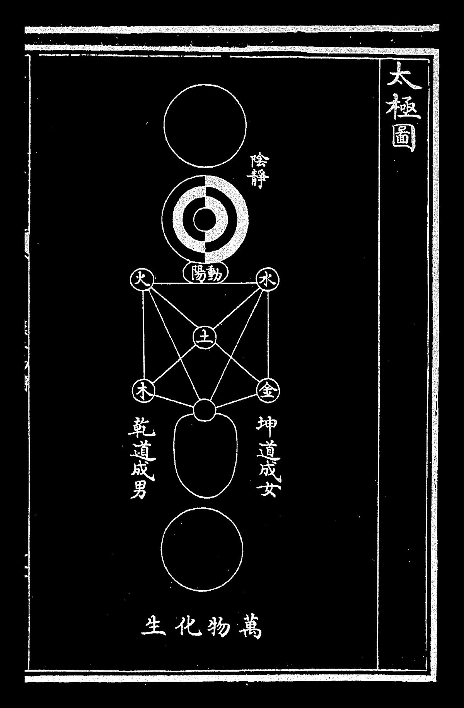

Tree of Life atom bomb: Philosopher's Stone
《弦訓傳說》
《新牙牌靈數64卦(15湖)》
《萬木無名 萬木無聲 林作 林家謙 最後的信仰 老人們與海 legends never die》
《我的香港鬼怪百物語》.docx
《私の香港の怪談》 .docx
Code曲=Art
解碼古文明：拼湊神話拼圖，揭示人類起源的關鍵 (1).pdf
寓言小說：和局之棋.pdf
hornedchess.github.io
極黑白魔法入口
